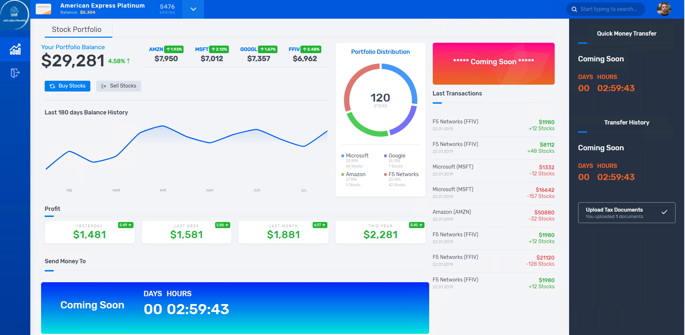
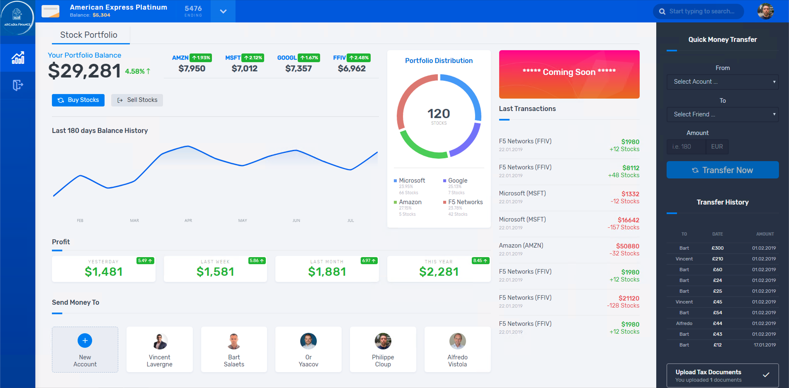

Workflow of the demo¶
- The demo is splitted in 2 classes
- Deploy, publish and protect Arcadia Web application
- Deploy and publish Arcadia Main App
- Deploy and publish Money Transfer App
- Deploy and publish Refer Friends App
- Apply WAF policy
- Publish and protect Arcadia API
- Publish the API using an OpenAPI 3.0 spec file
- Check the Developer Portal
- Protect the API with Advanced WAF and APM using OpenAPI 3.0 spec file
Step 1 - DevOps deploy Arcadia application¶
Note
Goal is to use the GUI in the NGINX Controller for our traditional customers. NetOps will configure the services (MainApp and BackEnd) manually.
Tasks:

- DevOps commit a new code in GitLab in order to publish a brand new application “Arcadia Bank”
- GitLab webhooks this commit and ask Jenkins to run a pipeline. This pipeline:
- Deploy Arcadia application in Kubernetes (Terraform).
- Deploy nodeports in Kubernetes (but it could be KIC) (Terraform).
- Deploy NGINX+ instances (ADC) in Docker, in front of this K8S cluster (Terraform)
- Create Gateways in NGINX Controller for each NGINX+ instance (Ansible)
- Deploy AS3 template into front BIGIP to publish publically the application - without WAF (Ansible)
- NetOps create ADC configuration in NGINX controller in order to “route” traffic to the right K8S service
- MainApp (/*) to service MainApp
- BackEnd (/file*) to service BackEnd
{kind=link}
Warning
At this stage, the first part of the application is published and can be accessed and demonstrated. We can see Money Transfert application is not yet there, same for Refer Friends.
Step 2 - DevOps deploy Money Transfer application¶
Note
Goal is to demonstrate NGINX Controller has a REST API to configure objects. NetOps will configure the service (Money Transfer) via REST API.
Tasks:

- DevOps commit a new code in GitLab in order to publish the second part of the Arcadia Bank website. This new application allows money transfer between friends.
- GitLab webhooks this commit and ask Jenkins to run a pipeline. This pipeline:
- Deploy Money Transfer application in Kubernetes (Terraform)
- Deploy nodeports in Kubernetes (Terraform)
- NetOps use REST API to publish this new app on NGINX+ instances
{kind=link}
Warning
At this stage, the Money Transfer application is published and can be accessed and demonstrated
Step 3 - DevOps deploy Refer Friends application¶
Note
Goal is to demonstrate NGINX Controller can be part of the application lifecycle and CICD. NetOps don’t configure anything.
Tasks:
- DevOps commit a new code in GitLab in order to publish the third and last part of the Arcadia Bank website. This new application allow a customer to refer friends with their email address.
- GitLab webhooks this commit and ask Jenkins to run a Pipeline. This pipeline:
- Deploy Refer Friends application in Kubernetes (Terraform)
- Deploy nodeports in Kubernetes (Terraform)
- Configure all components in NGINX Controller (Ansible)

Warning
At this stage, the Refer Friends application is published and can be accessed and demonstrated. The Arcadia Bank website is finished, but not yet secured.
Step 4 - NetOps/SecOps publish WAF policy to protect Arcadia application¶
Note
Goal is to demonstrate BIG-IP Advanced WAF has a Declarative API interface to push WAF policies.
Task:
- NetOps run a Jenkins pipeline that will push a new AS3 declaration with a WAF policy built by Secops
Warning
At this stage, the Arcadia Bank website is published and secured.
Step 5 - Publish Arcadia API¶
Note
Goal is to demonstrate the new Controller capabilties with API management and gateway
Task:
- DevOps provide with an API specification file (OpenAPI 3.0 - OAS3)
- NetOps import this file into the Controller APIm and publish the API
- SecOps import his file into the BIG-IP and protect the API (WAF + Access)
- Developpers can access the new Developper Portal